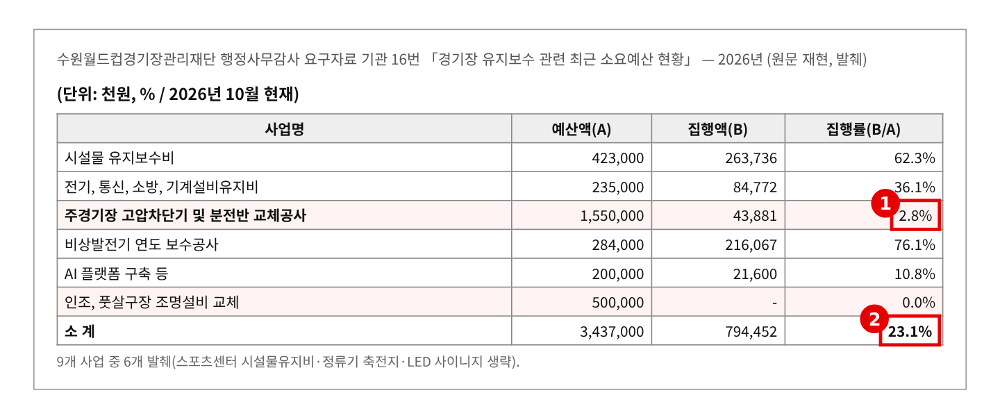
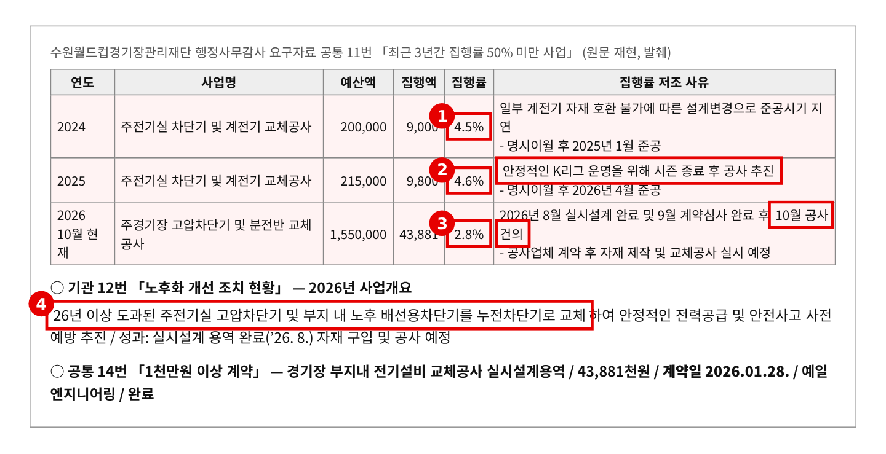
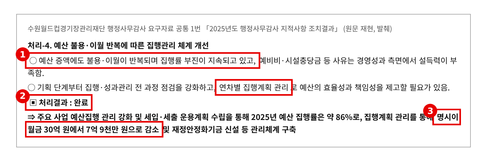
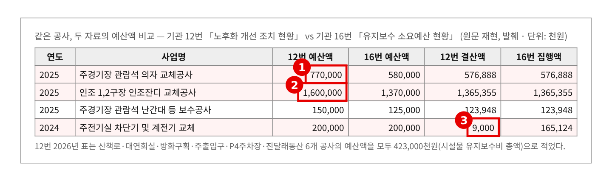

2026년 행정사무감사 질의서 (발언용 · 5분) — 기관 2일차
경기장 전기 차단기, 3년째 해를 넘깁니다
— 그해 집행률 4.5%·4.6%·2.8%, 작년 지적은 "완료"
문화체육관광위원회 황은화 위원 → 경기도수원월드컵경기장관리재단 사무총장
| ① 차단기 교체, 3년째 해를 넘긴다 | 그해 집행률 2024년 4.5% → 2025년 4.6% → 2026년(10월) 2.8%. 2024·2025년 모두 명시이월 → 2026년 15억 5천만 원 — 1월 설계 계약, 8월 설계 완료, 10월에야 "공사 건의" |
| ② 작년 지적은 "완료", 올해는 23.1% | 2025 행감 「불용·이월 반복」 지적 → 재단 "처리결과: 완료" → 2026년 유지보수 예산 34억 3,700만 원 중 23.1% 집행(10월). 조명 5억 원 0% |
| ③ 같은 공사, 자료마다 예산이 다르다 | 관람석 의자 7억 7천만 원(12번) vs 5억 8천만 원(16번), 인조잔디 16억 vs 13억 7천만 원 → 이월 예정액·공정표부터 정확히 내야 한다 |
※ 의원실 메모 (발언 제외) — 다른 위원 요구자료와 겹치는지 점검 · 12번(노후화 개선)은 이미정·전예슬·황은화, 16번(유지보수 예산)은 이미정·한규찬·황은화 공동 요구다. 이미정 위원은 경영평가 지표를 다룰 예정(분석자료 1101 확인) — 겹치지 않는다. 전예슬·한규찬 위원이 노후 시설 일반을 물을 수 있으니, 이 질의는 "전기설비가 해마다 이월된다"로 좁힌다. · 공통 11번(집행률 50% 미만)·19번(이월)은 여러 위원 공통자료다. 8번 스포츠센터 개보수(이진형·이병숙), 14번 잔디(이진형·이병숙)는 다루지 않는다. · 웨딩홀·주차관제·업무추진비·직제·임금·수원삼성은 다른 위원 몫이라 다루지 않는다. · 재단은 독립채산제(도 출연금 없음)라 2027년 도 예산안에는 해당 사업이 없다. 2024년 차단기 "집행 9,000천원"은 그해 집행분(공통 11번), 16번의 165,124천원은 이월 후 집행까지 합친 값이라 같은 공사라도 기준이 다르다. 발언에서는 기준이 같은 예산액 차이(의자·인조잔디)만 쓴다. |
※ 발언 중 [근거 n] 표시는 맨 뒤 「근거자료」 번호입니다. 읽지 않고, 해당 자료를 화면에 띄웁니다.
■ 발언 — 도입
사무총장님, 수원월드컵경기장 전기설비 교체에 대해 여쭙겠습니다.
재단은 해마다 노후 시설을 고치는 데 35억 원 안팎을 씁니다. 올해는 34억 3,700만 원입니다. 그 가운데 제가 가장 걱정하는 건 주전기실 고압차단기입니다. [근거 1]
▶ 질문 1. 차단기 교체가 3년째 해를 넘깁니다
차단기는 전기가 넘치거나 샐 때 끊어 주는 장치입니다. 제대로 작동하지 않으면 경기 중에 정전이 나거나 불이 날 수도 있습니다.
그런데 이 공사가 3년째 그해에 끝나지 않았습니다. 2024년에는 2억 원을 잡아 놓고 연말까지 4.5%를 썼고, 다음 해 1월에 끝났습니다. 2025년에도 2억 1,500만 원 가운데 4.6%를 썼고, 올해 4월에야 끝났습니다. 이유는 "K리그 시즌이 끝난 뒤 공사"였습니다. [근거 2]
올해는 규모가 커져 15억 5천만 원입니다. 그런데 10월까지 쓴 돈은 설계비 4,388만 원, 2.8%뿐입니다. 설계 계약은 1월에 했는데 설계가 끝난 게 8월이고, 공사는 이제 "건의" 단계입니다. 재단 스스로 "26년 이상 지난 고압차단기"라고 적었습니다. [근거 1][근거 2]
사무총장님, 올해 안에 교체를 끝낼 수 있습니까? 못 끝내면 내년 몇 월에 끝납니까? 그동안 경기는 어떻게 안전하게 치릅니까?
▷ "자재 제작 기간이 있어 이월해 비시즌에 공사하겠다"
→ K리그 일정은 해마다 같습니다. 3년째 같은 이유입니다. 시즌을 알면서 1월에 설계를 시작해 8월에 끝냈다면, 처음부터 공정 계획이 잘못된 겁니다. 교체 전까지 정밀점검 횟수와 비상 대응 계획을 내 주십시오.
▶ 질문 2. 작년 지적은 "완료", 올해는 23.1%
작년 행정사무감사에서 "불용·이월이 반복된다, 연차별 집행계획을 관리하라"고 지적했습니다. 재단은 "완료"라고 답했습니다. 명시이월을 30억 원에서 7억 9천만 원으로 줄였다고 했습니다. [근거 3]
그런데 올해 10월 기준 유지보수 예산 34억 3,700만 원 가운데 23.1%만 썼습니다. 차단기 15억 5천만 원, 조명 교체 5억 원은 거의 손도 대지 못했습니다. [근거 1]
자료도 맞지 않습니다. 같은 공사인데 12번 자료와 16번 자료의 예산이 다릅니다. 관람석 의자 교체는 7억 7천만 원과 5억 8천만 원, 인조잔디 교체는 16억 원과 13억 7천만 원입니다. [근거 4]
사무총장님, 올해 이월 예정액은 얼마입니까? "완료"라고 한 집행관리는 무엇이 달라진 겁니까?
▷ "조명은 긴축 기조로 마무리추경 때 삭감할 예정이다"
→ 삭감은 집행이 아닙니다. 잡아 놓은 사업을 왜 못 했는지부터 따져야 합니다.
■ 마무리 · 요구사항
사무총장님, 경기장은 많은 관중이 한꺼번에 모이는 곳입니다. 전기설비는 미뤄도 되는 공사가 아닙니다. 3년째 같은 이유로 미뤄졌습니다. 이번에는 날짜를 정해 주십시오. 끝까지 챙기겠습니다.
하나, 고압차단기 교체 월별 공정표(계약·자재·시공·준공)와 교체 전 안전점검·비상 대응 계획을 감사 종료 전까지 내 주십시오.
둘, 2026년 이월 예정 사업과 금액, 사유를 12월까지, K리그 일정을 반영한 2027년 시설공사 연간 공정계획을 2027년 2월까지 보고해 주십시오.
셋, 12번과 16번 자료의 예산액 차이를 맞춘 정정자료를 감사 종료 전까지 내 주십시오.
■ 참고 · 감사 중 추가 요구자료
· 2024~2026년 경기장 부지내 전기설비 안전점검 결과보고서(㈜한국전기이엔지 수행분, 지적사항 포함)
· 고압차단기 교체공사 실시설계 보고서(예일엔지니어링)와 공사 발주 계획
· 예상 소요시간 — 발언 약 2분 55초(881음절) + 집행부 답변 약 40초(질문당 20초) + 자료 화면 전환 약 25초 = 약 4분. 재질의 2개와 답변까지 쓰면 약 4분 50초 — 5분 안 ※ 분당 300음절 기준
근 거 자 료
빨간 상자·번호는 발언에서 짚는 부분입니다. "원문 재현"은 요구자료 원문 표를 그대로 옮긴 것입니다.
▶ 질문 1 관련
근거 1. 2026년 유지보수 예산 집행 현황(10월 현재) 
※ 출처: 경기도수원월드컵경기장관리재단 「2026년도 행정사무감사 요구자료」 기관 16번 「경기장 유지보수 관련 최근 소요예산 현황(최근 3년)」(시설운영팀·안전관리팀) — 이미정·한규찬·황은화 위원 요구 |
근거 2. 차단기 교체공사 — 3년 연속 그해 집행률 4.5%·4.6%·2.8% 
※ 출처: 경기도수원월드컵경기장관리재단 「2026년도 행정사무감사 요구자료」 공통 11번 「최근 3년간 집행률 50% 미만 사업」, 기관 12번 「수원월드컵경기장 노후화 개선 조치 현황」, 공통 14번 「1천만원 이상 계약」 |
▶ 질문 2 관련
근거 3. 2025년 행감 지적 「불용·이월 반복」 — 재단 "완료" 
※ 출처: 경기도수원월드컵경기장관리재단 「2026년도 행정사무감사 요구자료」 공통 1번 「2025년도 행정사무감사 지적사항 조치 결과」 처리-4 |
근거 4. 같은 공사, 12번과 16번의 예산액이 다르다 
※ 출처: 경기도수원월드컵경기장관리재단 「2026년도 행정사무감사 요구자료」 기관 12번 「노후화 개선 조치 현황(2024~2026)」, 기관 16번 「경기장 유지보수 관련 최근 소요예산 현황」 (의원실 대조) |